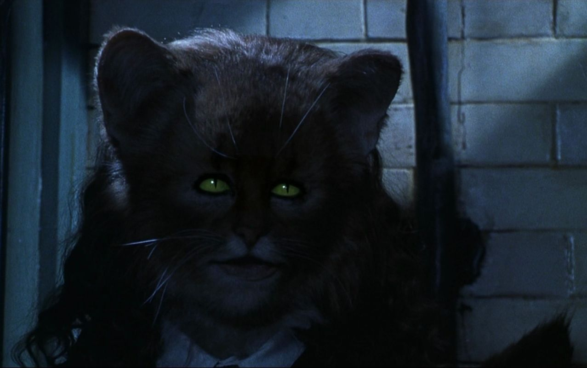
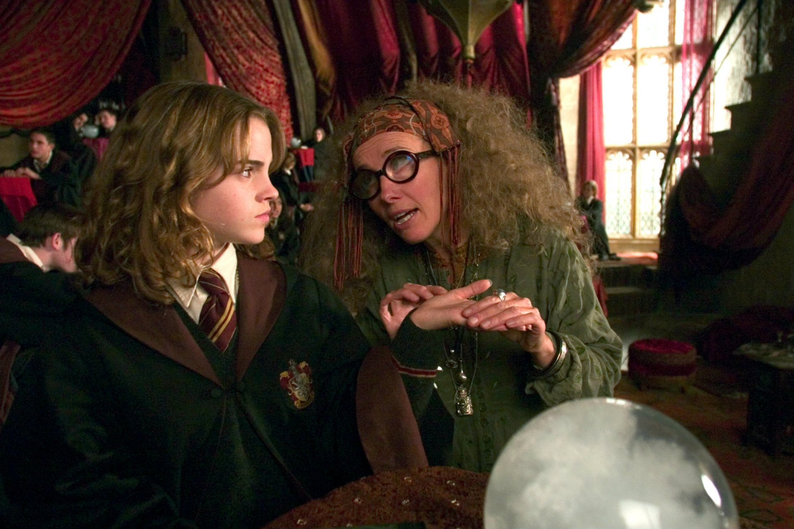
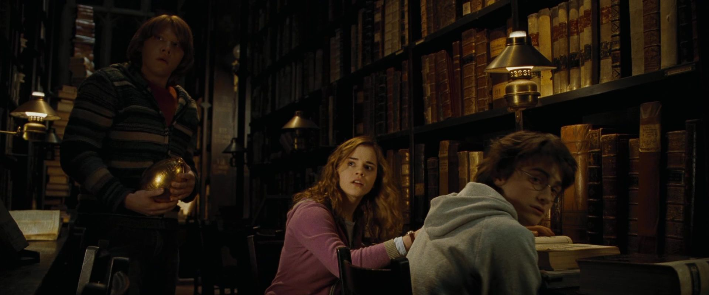
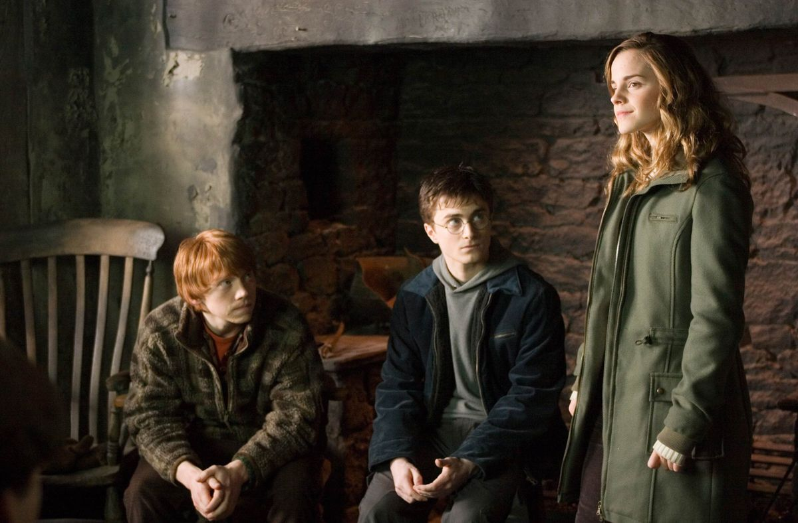
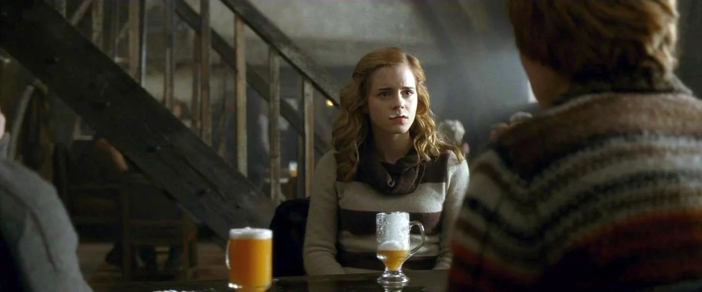
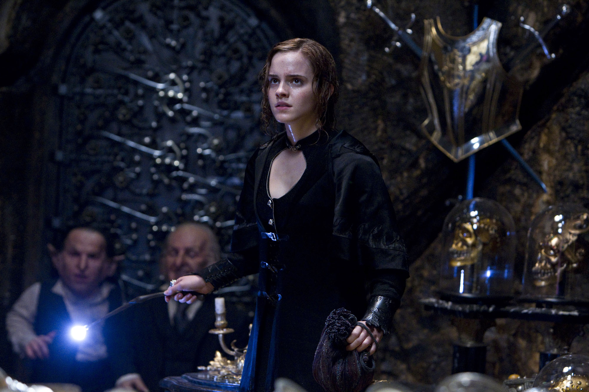

Гермиона Грейнджер
Гермиона Джин Грейнджер (англ. Hermione Jean Granger) — одна из главных героинь Поттерианы, подруга и однокурсница Гарри Поттера и Рона Уизли, член Золотого Трио. Единственная дочь мистера Грейнджера и его жены. Играет важную роль во всех событиях, которые происходят в жизни Гарри.
Родилась 19 сентября 1979 года. В 11 лет узнала, что на самом деле является волшебницей и зачислена в Хогвартс. В этой Школе магии и волшебства она попадает на факультет Гриффиндор, на котором учатся также Гарри Поттер, Рон и Джинни Уизли (на курс младше), её лучшие друзья. Судя по дате рождения, Гермиона из поступивших в Хогвартс в 1991 году самая старшая среди своих одноклассников, и не могла поступить в Хогвартс годом раньше, так как ученику на момент поступления должно быть полных 11 лет. Большинство же её одноклассников родились в 1980 году.
Гермиона очень любит учёбу и уделяет ей много времени. Иногда она бывает слишком высокомерной и чрезмерно гордится своими успехами в учёбе. Она честолюбива, на уроках всегда старается ответить первой и выделиться своими знаниями, за что многие не без оснований считают её «всезнайкой» и «ботаничкой». В глазах окружающих она со своим фанатичным стремлением к порядку и дисциплине выглядит излишне «правильной» и занудной, и за это над ней часто смеются. Однако первое впечатление о ней оказывается неверным. Действительно, соблюдение формальных правил и успехи в учёбе для неё много значат, но можно со всей уверенностью сказать, что для неё существуют гораздо более значимые ценности и идеалы.
Внешность
У Гермионы карие глаза и каштановые волосы. В момент знакомства она описана как «…девочка с густыми каштановыми волосами, уже переодевшаяся в школьную форму. Её передние зубы были чуть длиннее, чем надо». В дальнейшем, когда в Гермиону попало пущенное Малфоем заклинание «Дантисимус», передние зубы девочки стали усиленно расти и выросли чуть ли не до подбородка. В Больничном Крыле мадам Помфри дала Гермионе зеркало, уменьшающее зубы, и велела махнуть рукой, когда зубы станут прежнего размера. Гермиона подождала немножко больше, и её зубы стали ровными и красивыми. Лишь на четвёртом курсе, во время Святочного бала, Гарри с удивлением замечает, что Гермиона красива. К семнадцати годам девушка расцветает окончательно.
Первый год в Хогвартсе
Гарри и Рон едут на Хогвартс-Экспрессе и встречают Гермиону. Они признают её слишком умной, всезнайкой. В Хогвартсе они постоянно ссорятся с ней из-за её трепетного отношения к правилам.
Во время Хэллоуина происходит ещё одна стычка из-за того, что Грейнджер «слишком много знает». Однако в этот же день Гарри и Рон, нарушив при этом приказ расходиться по спальням, спасают её от четырёхметрового горного тролля. Гермиона всю вину берёт на себя, и у троицы налаживаются хорошие отношения. Ребята становятся лучшими друзьями.
Гермиона помогает Гарри отправить Норберта, дракона Хагрида, к Чарли, брату Рона. При этом они с другом нарушают правила школы и зарабатывают наказание в Запретном лесу.
Когда все трое отправляются на поиски Философского камня, Гермиона выручает друзей из объятий дьявольских силков — скользкого ползучего растения, и решает загадку Снегга, основанную не на волшебном знании, как все предыдущие заклятия охраны философского камня, а на чистой логике.
На банкете по случаю конца учебного года Гермиона получает 50 дополнительных очков за «умение использовать холодную логику перед лицом пламени».
Второй год в Хогвартсе
Гермиона появляется впервые в фильме и в третьей главе книги, когда Гарри приезжает в «Нору», дом семейства Уизли.
Когда Гарри, Рон и Гермиона решают создать Оборотное зелье, Грейнджер, используя лесть, получает у Локонса разрешение взять в библиотеке книгу «Сильнодействующие зелья». В дальнейшем Гарри и Гермионе удаётся выкрасть ингредиенты из кабинета Снегга. Гермиона берёт для зелья волос с пиджака Миллисенты Булстроуд из Слизерина, с которой она дралась в дуэльном клубе. Но это оказывается кошачий волос, и девочка превращается в получеловека-полуживотное, после чего ей приходится долго лечиться.
Позднее на Гермиону совершается нападение, и она цепенеет, как и предыдущие жертвы монстра Тайной комнаты. Однако, побывав перед этим в библиотеке, она понимает, что это чудовище — змей Василиск, и вырывает страницу из книги о василиске, на которой пишет слово «трубы». Страница была найдена у неё в оцепеневшей руке. Друзья поняли из этого, что чудовище Тайной Комнаты передвигается по трубам канализации. Впоследствии преподаватель травологии профессор Стебль сделала отвар из мандрагор и оживила всех жертв василиска, в том числе и Грейнджер.
Из-за многочисленных жертв нападений и, соответственно, их неподготовленности, экзамены отменяются, и Гермиона очень расстроена.
Третий год в Хогвартсе
На каникулах Гермиона едет с родителями во Францию и посылает Гарри на день рождения подарок — набор по уходу за метлой.
В Косом переулке Грейнджер встречает Рона, затем и Гарри. В «Волшебном зверинце» покупает кота Живоглота (хотя первоначально планировала купить сову).
В Хогвартсе Грейнджер получает от Макгонагалл, декана их факультета, маховик времени, с помощью которого ей удаётся посещать «одновременно» все интересующие её учебные предметы (несмотря на накладки в расписании). С первого же занятия у Гермионы начинает развиваться неприязнь к прорицаниям. В итоге, поругавшись с профессором Трелони, она бросает изучение этого предмета.
На Рождественских каникулах Гермиона узнаёт, что Гарри подарили лучшую в мире метлу — «Молнию». Она подозревает, что метлу мог прислать Сириус Блэк, наложив на неё кучу смертоносных заклятий, и рассказывает о подарке профессору Макгонагалл. Та забирает метлу у Гарри. Из-за этого у друзей происходит очередная ссора, но вскоре метлу, исследовав, возвращают. Из-за подозрения, что Живоглот съел крысу Рона, тот обижается на девочку, и они не общаются несколько недель. Гермионе одиноко, она часто ходит плакать к Хагриду и попутно помогает тому подготовиться к защите Клювокрыла в суде. После вынесения Клювокрылу смертного приговора мирится с Роном и в тот же день бьёт Малфоя по лицу за насмешки над Хагридом.
Гермиона — единственная из учеников, кто догадывается, что профессор Люпин оборотень, но никому об этом не говорит, даже Гарри и Рону. В конце года Гермиона блестяще сдаёт экзамены, только на экзамене по Защите от тёмных искусств не может справиться с боггартом (он принял облик профессора Макгонагалл, сказавшей, что Гермиона «всё завалила»). Позже с помощью маховика времени возвращается с Гарри на несколько часов в прошлое, чтобы спасти Клювокрыла и Сириуса.
Четвертый год в Хогвартсе
На четвёртом курсе Гермиона начала усиленно заниматься общественной деятельностью: она создала организацию Г. А. В. Н. Э. (Гражданскую Ассоциацию Восстановления Независимости Эльфов), деятельность которой была направлена на защиту прав домашних эльфов. Гарри и Рону её затея не нравилась.
Гермиона помогает Гарри в некоторых испытаниях Турнира Трёх Волшебников. Она мирит Рона и Гарри, когда те поругались, но вскоре сама ссорится с Роном. На Святочный бал идёт с Виктором Крамом, ловцом болгарской сборной по квиддичу. В конце года он приглашает её к себе на летние каникулы.
Пятый год в Хогвартсе
На пятом курсе Гермиона стала старостой Гриффиндора. Она предложила Гарри создать «Отряд Дамблдора» и сыграла главную роль в сокрытии и защите организации. Гермиона придумала фальшивые галлеоны для того, чтобы члены ОД могли по ним узнавать дату нового собрания. Также Гермиона спасла Гарри от пытки заклятием Круциатус.
Во время битвы в Министерстве Гермиона была поражена заклятием Антонина Долохова и на долгое время потеряла сознание (в фильме сражается вместе со всеми до появления мракоборцев).
Шестой год в Хогвартсе
Гермиона негативно относится к учебнику принца-полукровки и пытается выяснить, кому именно принадлежала книга. На отборочных испытаниях по квиддичу она накладывает на семикурсника Кормака Маклаггена заклятие Конфундус и тем самым способствует назначению Рона в команду на место вратаря. Проявляет интерес к Рону Уизли, но тот не замечает этого и начинает встречаться с Лавандой Браун. Грейнджер в отместку идёт на званый ужин к Горацио Слизнорту с Маклаггеном, но расстаётся с ним. Почти выясняет, кем является Принц-Полукровка, найдя информацию о студентке Эйлин Принц, но не выяснив до конца, что она была матерью Снейпа.
Седьмой год в Хогвартсе
Гермиона не едет учиться в Хогвартс, а отправляется вместе с Гарри и Роном на поиски крестражей. Она спасает жизнь Гарри при встрече со змеёй Нагайной. В первый раз целуется с Роном Уизли. Сражается в битве за Хогвартс, в начале которой уничтожает клыком василиска крестраж — чашу Пенелопы Пуффендуй.
Дальнейшая судьба
После вышеописанных событий отправилась в Австралию и вернула родителям память. Позже вернулась домой вместе с ними.
Гермиона начала свою трудовую карьеру с Отдела регулирования и контроля за магическими существами, где способствовала значительному улучшению жизни эльфов-домовиков и их собратьев. Потом перешла (несмотря на своё заявление Руфусу Скримджеру) в Отдел магического правопорядка, где занималась искоренением несправедливых законов, защищающих только чистокровных магов.
Вышла замуж за Рона Уизли. У них двое детей — дочь Роза и сын Хьюго.